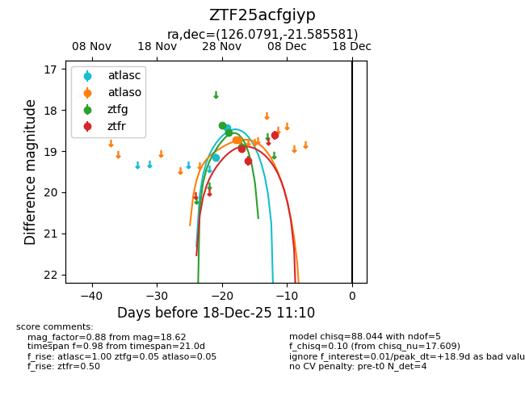
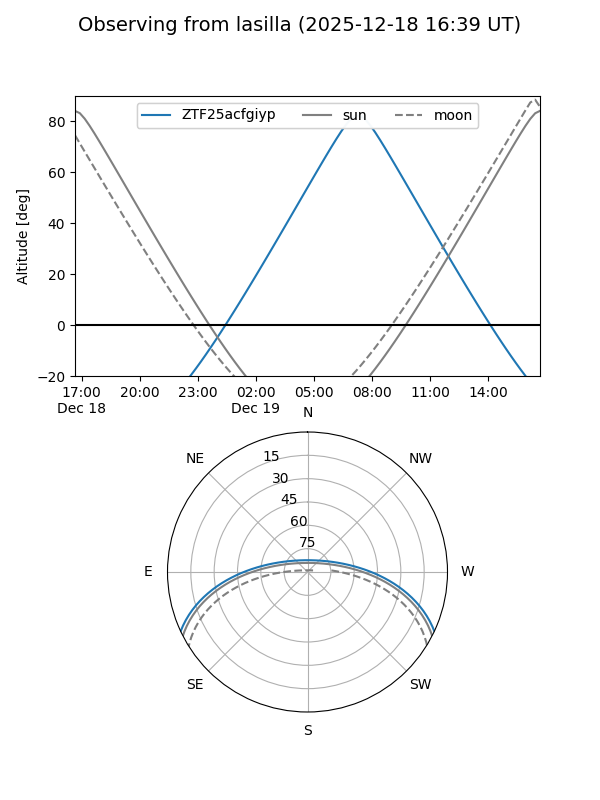
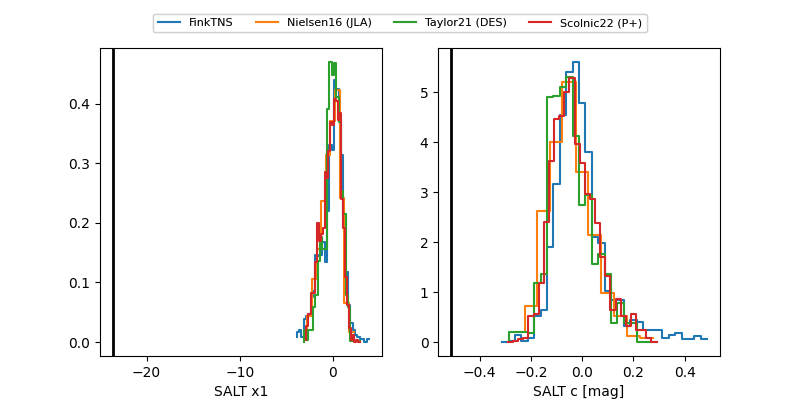

ZTF25acfgiyp
Target ZTF25acfgiyp at 2025-12-18 11:17
Aliases and brokers:
FINK: fink-portal.org/ZTF25acfgiyp
Lasair: lasair-ztf.lsst.ac.uk/objects/ZTF25acfgiyp
ALeRCE: alerce.online/object/ZTF25acfgiyp
alt names
ZTF25acfgiyp (ztf,fink_ztf)
Coordinates:
equatorial (ra, dec) = 126.0791,-21.58558
equatorial (HMS+DMS) = 08:24:18.99,-21:35:08.09
galactic (l, b) = (242.9928,+9.12126)
Photometry
last atlasc=18.43, atlaso=18.73, ztfg=18.89, ztfr=18.62
2 atlasc, 2 atlaso, 3 ztfg, 3 ztfr detections
Lightcurve

Visibility


Additional plots
